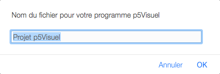
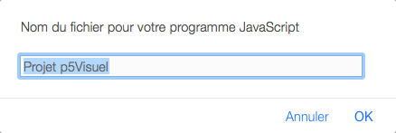
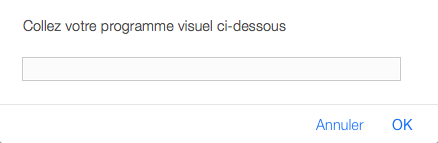
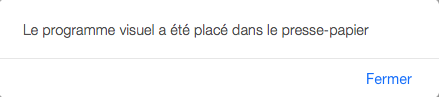
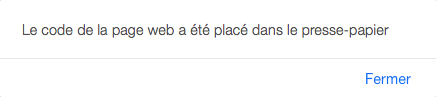
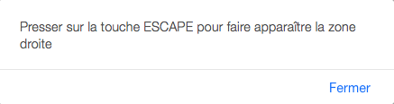

Les menus de p5Visuel
Dans la partie droite de l'éditeur p5Visuel, on
peut trouver une zone comportant deux éléments distincts :
• les menus SAUVER-RAMENER et AIDE-CONFIGURATION
• une zone de texte où se construit le code JavaScript du
programme, au fur et à mesure de l'introduction des blocs
Nous allons passer en revue les divers éléments du MENU SAUVER-RAMENER
Ramener programme p5Visuel
En mode débutant, on offre tout d'abord à l'utilisateur d'enregistrer le programme courant localement sur l'ordinateur , dans le dossier spécifié dans les préférences du navigateur.
On affiche ensuite une fenêtre de dialogue permettant à l'utilisateur de choisir un fichier, sur l'ordinateur (ou l'un de ses périphériques). Une fois ce choix effectué, l'éditeur p5Visuel charge et affiche le programme ainsi choisi en lieu et place du programme courant.
Si le fichier choisi n'est pas reconnu comme un programme p5Visuel, on demande à l'utilisateur s'il veut essayer quand même d'ouvrir le fichier, à ses risques et périls.
Ajouter un programme au programme courant
On affiche une fenêtre de dialogue permettant à l'utilisateur de choisir un fichier, sur l'ordinateur (ou l'un de ses périphériques). Une fois ce choix effectué, l'éditeur p5Visuel ajoute au programme courant (sans le modifier) le programme ou fragment de programme contenu dans le fichier.
Au besoin, certaines fonctions du programme contenu dans le fichier seront renommées pour éviter de remplacer des fonctions de même nom du programme courant.
Sauver programme p5Visuel
Demande à l'utilisateur de donner un nom au programme p5Visuel affiché dans l'éditeur. Puis enregistre celui-ci sur l'ordinateur, dans le dossier spécifié dans les préférences du navigateur.

Sur certains navigateurs web, si un programme du même nom existe déjà dans ce dossier, on ajoute au nom choisi par l'utilisateur un suffixe numérique pour éviter de détruire le programme précédent. Par contre, sur d'autres navigateurs web, un programme précédent de même nom sera détruit sans avertissement.
Le fichier nouvellement créé est un fichier texte, et utilise l'extension ".p5V".
Sauver traduction JavaScript
Demande à l'utilisateur de donner un nom au code JavaScript associé au programme p5Visuel affiché dans l'éditeur. Puis enregistre ce code sur l'ordinateur, dans le dossier spécifié dans les préférences du navigateur.

Sur certains navigateurs web, si un programme JavaScript du même nom existe déjà dans ce dossier, on ajoute au nom choisi par l'utilisateur un suffixe numérique pour éviter de détruire le programme précédent. Par contre, sur d'autres navigateurs web, un programme JavaScript précédent de même nom sera détruit sans avertissement.
Le fichier nouvellement créé est un fichier texte, et utilise l'extension ".js".
Sauver dans une page web
Demande à l'utilisateur de donner un nom à la page web associée au programme p5Visuel affiché dans l'éditeur. Puis enregistre cette page web sur l'ordinateur, dans le dossier spécifié dans les préférences du navigateur.

Sur certains navigateurs web, si une page web du même nom existe déjà dans ce dossier, on ajoute au nom choisi par l'utilisateur un suffixe numérique pour éviter de détruire le programme précédent. Par contre, sur d'autres navigateurs web, un page web précédente de même nom sera détruite sans avertissement.
Le fichier nouvellement créé est un fichier texte, et utilise l'extension ".html".
Cette commande ne fonctionne pas bien dans le cas où le programme doit s'exécuter dans une page web prédéfinie. Dans ce cas, il faudra intégrer le code JavaScript à ladite page web.
Coller programme p5Visuel
Dans le cas où un programme p5Visuel a déjà été placé dans le presse-papier (via un copier ou un couper), cette commande permet d'incorporer ce programme à l'éditeur : on présente la boîte de dialogue ci-dessous, et l'utilisateur doit alors faire un clic dans la zone d'entrée et coller le programme en utilisant le menu d'édition ou un raccourci clavier (commande+V sur Mac ou controle+V sur Windows).

Notez que, même si on ne voit qu'une ligne de programme dans la zone d'entrée, le programme complet (tel que contenu dans le presse-papier) est bel et bien pris en compte.
Coller un programme au programme courant
Cette commande fonctionne comme la commande précédente, à la différence que le (fragment de) programme p5Visuel collé ne remplace pas le programme déjà présent dans l'éditeur : ses variables et ses fonctions sont simplement ajoutées au programme courant.
Au besoin, certaines fonctions du programme contenu dans le fichier seront renommées pour éviter de remplacer des fonctions de même nom du programme courant.
Copier programme p5Visuel
Cette commande place dans le presse-papier le texte du programme p5Visuel présent dans l'éditeur, tel que confirmé par la zone de dialogue qui apparaît alors :

Le texte du programme p5Visuel pourra alors être utilisé dans l'éditeur p5Visuel (voir les deux commandes précédentes), ou dans tout autre programme acceptant de coller des données de type texte.
Copier traduction JavaScript
Cette commande place dans le presse-papier le code JavaScript associé au programme p5Visuel présent dans l'éditeur, tel que confirmé par la zone de dialogue qui apparaît alors :

On pourra ensuite utiliser ce code JavaScript dans tout éditeur JavaScript permettant d'incorporer les bibliothèques JavaScript de p5Visuel (fichier bibAB.js), de p5.js et de MathJax (nécessaire seulement si des notations mathématiques sont utilisées),
Copier le code de la page web
Cette commande place dans le presse-papier le code HTML associé au programme p5Visuel présent dans l'éditeur, tel que confirmé par la zone de dialogue qui apparaît alors :

Ce code est complet, en ce sens qu'il permet d'afficher une page web dans un contexte où l'on a accès à l'internet.
Notez cependant qu'il ne fonctionnera pas dans le cas où le programme p5Visuel est exécuté dans une page web pré-définie. Dans ce cas, il faudra intégrer le code JavaScript à la page web.Nous allons passer en revue les divers éléments du MENU AIDE-CONFIGURATION
Mode débutant
Cette commande nous permet d'entrer dans le mode débutant, et d'en sortir. Une coche nous indique l'état de la situation. Quand le mode débutant est activé, certaines actions sont précédées d'avertissements, pour éviter des faux-pas (comme remplacer un programme avant de l'avoir enregistré).
Cacher la zone droite
On peut montrer ou cacher la zone droite à l'aide de la touche ESCAPE. Pour faire connaître cette possibilité, la présente commande a été ajoutée au menu. En mode débutant, l'information suivante est affichée.

Aide
Cette commande affiche la documentation disponible pour p5Visuel.
Accès au Visual Math Editor
Cette commande affiche le Visual Math Editor, qui permet de composer facilement des expressions mathématiques, que l'on pourra ensuite utiliser dans p5Visuel.
Montrer les blocs ...
Ces diverses commandes nous permettent d'afficher ou de cacher diverses catégories de blocs de p5Visuel.